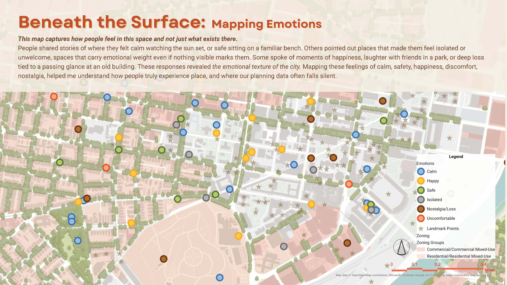
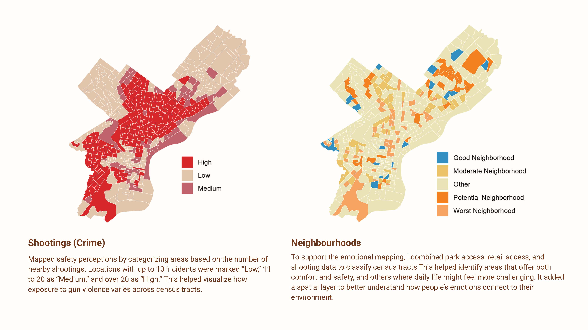
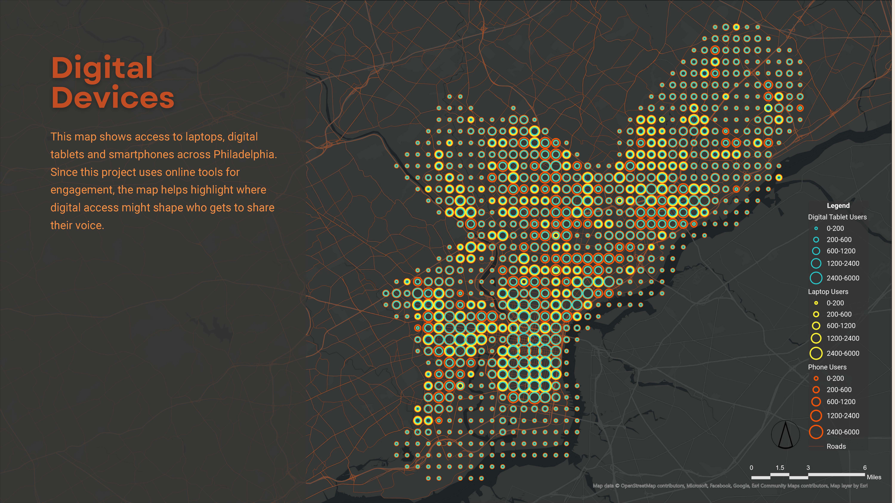
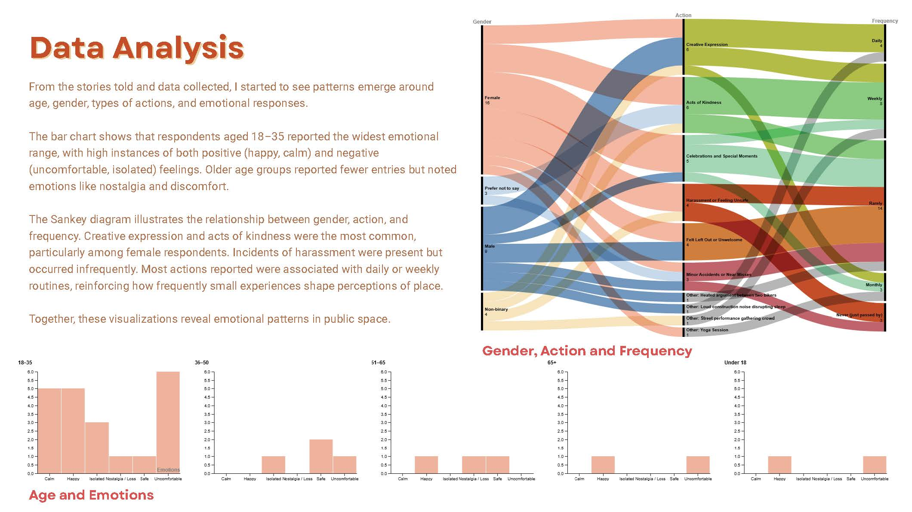
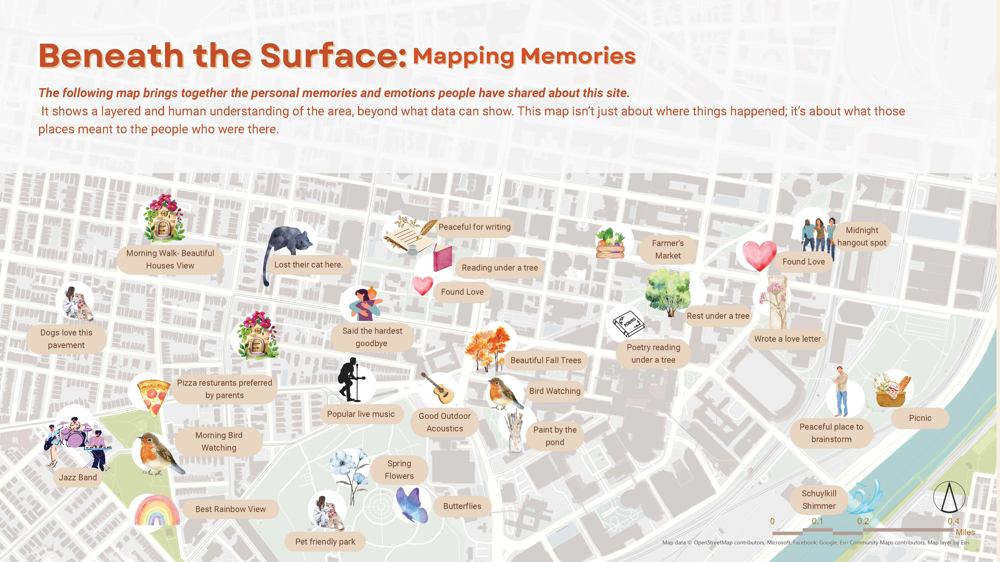

Lived Narratives Emotional geographies as spatial infrastructure · Witte-Sakamoto Family Prize
Cities are mapped through land use, density, transit, and demographics — but these layers rarely explain where someone feels safe, excluded, creative, or at ease.
Lived Narratives reframes emotional experience as spatial infrastructure. This original research project develops a structured framework to capture, classify, and geocode lived narratives, integrating subjective experience into measurable urban systems. Recognized with the Witte-Sakamoto Family Prize, the work proposes a method for embedding human perception directly into spatial analysis.
Rather than treating emotion as anecdotal, this project treats it as data.

Location: University City, Philadelphia
Type: Self-directed research and pilot deployment
Objective: Build a replicable model for emotional mapping within urban planning systems
University City was selected for its density, mixed land use, institutional presence, and transit connectivity. Its layered infrastructure and demographic diversity created an ideal environment to test how structural conditions shape lived perception. The work moved deliberately from theory to implementation — grounding itself in “Soft City” scholarship and public life research before developing a spatial and participatory framework capable of generating structured emotional datasets.
The project began by constructing a quantitative spatial baseline. Using R, QGIS, and ArcGIS, I analyzed park access (proximity thresholds), retail concentration, shooting exposure, broadband and device distribution, and transit connectivity. These layers established the structural conditions under which everyday experience unfolds — revealing inequities in safety, access, and connectivity across census tracts.
To prevent emotional data from becoming unstructured narrative, I developed a formal taxonomy linking defined emotional states (calm, safe, isolated, uncomfortable, nostalgic) with everyday actions such as creative expression, acts of kindness, harassment experiences, celebrations, and routine use.
Data collection combined informal interviews, real-time geocoded mapping, and structured form submissions capturing demographic variables and visit frequency. Each narrative was spatially anchored and categorized, enabling pattern-based interpretation across the study area.
The result is a hybrid map — one that reveals not only what exists in space, but how it is experienced.
This project demonstrates that emotional experience is not abstract — it follows infrastructure. Areas with limited park access, weaker retail presence, and higher safety exposure showed higher concentrations of discomfort and isolation. Well-connected public spaces revealed patterns of routine engagement, calm, and creative expression.
When structured deliberately, subjective perception becomes analyzable without being reduced. Emotional mapping expands planning from measuring physical systems to understanding relational ones — how people interact with, interpret, and internalize space. Urban data systems are highly effective at measuring assets and deficits; they are less equipped to measure belonging. Lived Narratives proposes that belonging is a spatial condition that can be studied, visualized, and designed for.



